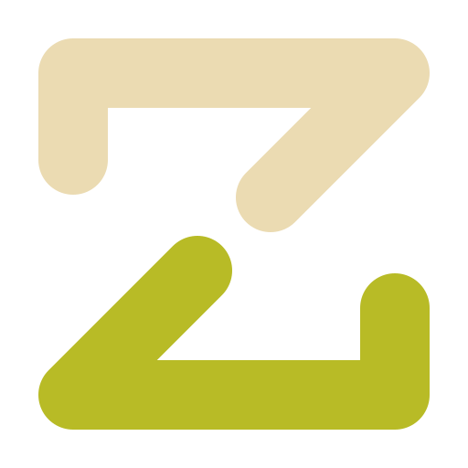
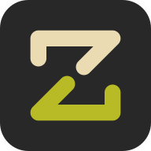
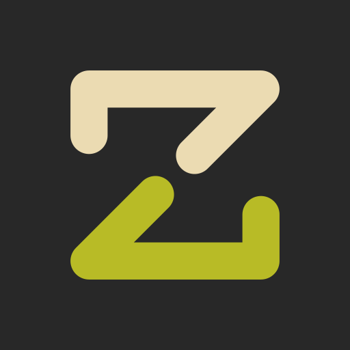

Deux triangles ouverts, trait arrondi 76, cadre 80..432, pattes 95, marge 42 px/côté (~8 %). Source unique : scripts/gen-icons.mjs, déclinée en 8 fichiers.
brandLogo() dans js/icons.js : neutre en currentColor, accent en light-dark() — suit le thème de l'app. Aperçu aux deux thèmes :
Favicon adaptatif : neutre/accent via prefers-color-scheme (suit le thème de l'OS, pas du conteneur). Tailles réelles 32/16 + zoom.

Fallback favicon (Safari), 32², fond sombre, mark pleine échelle (BIG).
Manifest any (fallback lanceur), 192², fond sombre arrondi, mark en zone sûre (SAFE 0,7145).

Écran d'accueil iOS, 180², fond plein, mark en zone sûre. Aperçu avec l'arrondi iOS.
Manifest maskable, 512², fond plein. Le mark tient dans le cercle Ø 410 : aucun rognage, quel que soit le masque (cercle, squircle…).

Badge de notification (barre de statut mobile) : silhouette blanche monochrome sur transparent, 96² pour le PNG. Android le teinte selon le contexte.
Tray système, 64², couleur sur transparent, embarqués dans zra-tray. Sombre : Linux + Windows barre sombre ; claire : Windows barre claire (swap selon le thème, vérifié toutes les 5 s).